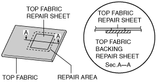

Workshop Manual ➭ BODY & ACCESSORIES ➭ EXTERIOR TRIM ➭ CONVERTIBLE TOP REMOVAL/INSTALLATION
CONVERTIBLE TOP REMOVAL/INSTALLATION
id091600807700
1. Cover both sides of the rear window glass with thick cloth to protect the window.
2. Remove the following parts:
(1) Console (See CONSOLE REMOVAL/INSTALLATION.)
(2) Quarter trim (See QUARTER TRIM REMOVAL/INSTALLATION.)
(3) Scuff plate (See SCUFF PLATE REMOVAL/INSTALLATION.)
(4) Tire house trim (See TIRE HOUSE TRIM REMOVAL/INSTALLATION.)
(5) Aeroboard (See AEROBOARD REMOVAL/INSTALLATION.)
(6) Front seat back bar garnish (See SEAT BACK BAR GARNISH REMOVAL/INSTALLATION.)
(7) Back trim (See BACK TRIM REMOVAL/INSTALLATION.)
(8) Seat belt set plate (See SEAT BELT REMOVAL/INSTALLATION.)
(9) Seat back crossmember assembly (See SEAT BACK CROSSMEMBER ASSEMBLY REMOVAL/INSTALLATION.)
(10) Rear side trim (See REAR SIDE TRIM REMOVAL/INSTALLATION.)
(11) Rear package trim (See REAR PACKAGE TRIM REMOVAL/INSTALLATION.)
(12) Side shelf (See SIDE SHELF REMOVAL/INSTALLATION.)
(13) Seat belt upper anchor installation bolt (See SEAT BELT REMOVAL/INSTALLATION.)
3. Disconnect the rear window defroster connector.
4. Remove in the order indicated in the table.
5. Install in the reverse order of removal.
|
e5u916zw5012 |
|
1 |
Bolt A |
|---|---|
|
2 |
Nut A |
|
3 |
Nut B |
|
4 |
Set plate |
|
5 |
Band |
|
6 |
Convertible top (See Convertible Top Removal Note) (See Convertible Top Installation Note) (SeeTop Fabric Repair Procedure) |
1. Unlock the top lock.
Convertible Top Installation Note
1. Insert the rain rail into the beltline molding lip, and install it over the studs.
|
e5u916zw5013 |
2. Install the link bracket to the stud bolts with no gaps (a) on the mating surfaces, then tighten the bolts and nut.
|
amxzzw00000909 |
Tightening torque
19—25 N·m {1.9—2.6 kgf·m, 14—18 ft·lbf}
Note• Prepare the following before starting the procedure.
― Top fabric repair sheet
― Top fabric backing repair sheet (canvas material equivalent to commercially-available PVC leather)
― Adhesive agent
― Degreasing agent
― Utility knife
― Scissors
1. Place the top fabric repair sheet on the repair area of the top fabric from the top.
2. Set the ruler on the repair area and cut the top fabric repair sheet and the top fabric simultaneously using the utility knife.
|
amxzzw00002722 |
3. Using scissors, remove fraying on the top fabric repair sheet and the repair area where the damaged area was cut out.
4. Cut the top fabric backing repair sheet so that it is larger than the cut area.
|
amxzzw00002723 |
5. Using degreasing agent, degrease the top and back of the top fabric repair sheet and the top of the top fabric backing repair sheet.
|
amxzzw00002724 |
6. Apply adhesive agent to the back of the top fabric repair sheet and the repair area, and the top of the top fabric backing repair sheet.
Note• Apply adhesive agent twice to the back of the repair area and top fabric repair sheet because adhesive agent is easily absorbed by the fabric.
• Affix to the repair area a few minutes after applying the adhesive agent.
7. Affix the top fabric backing repair sheet to the repair area.
|
amxzzw00002725 |
8. Affix the top fabric repair sheet to the repair area.
Note• Press the top fabric repair sheet and the top fabric backing repair sheet together by holding them between your hands.
|
 amxzzw00002726 |
• Leave the repair until the adhesive agent dries.
1. Cut the top fabric backing repair sheet so that it is larger than the cut damage.
|
amxzzw00002727 |
2. Using degreasing agent, degrease the back of the cut damage repair area and the top of the top fabric backing repair sheet.
|
amxzzw00002728 |
3. Apply adhesive agent to the back of the cut damage repair area and the top of the top fabric backing repair sheet.
|
amxzzw00002729 |
Note• Apply adhesive agent twice to the back of the repair area and top fabric cut damage area because adhesive agent is easily absorbed by the fabric.
• Affix to the repair area a few minutes after applying the adhesive agent.
4. Affix the top fabric backing repair sheet to the repair area.
Note• Press the top fabric and the top fabric backing repair sheet together by holding them between your hands.
|
amxzzw00002730 |
• Leave the repair until the adhesive agent dries.